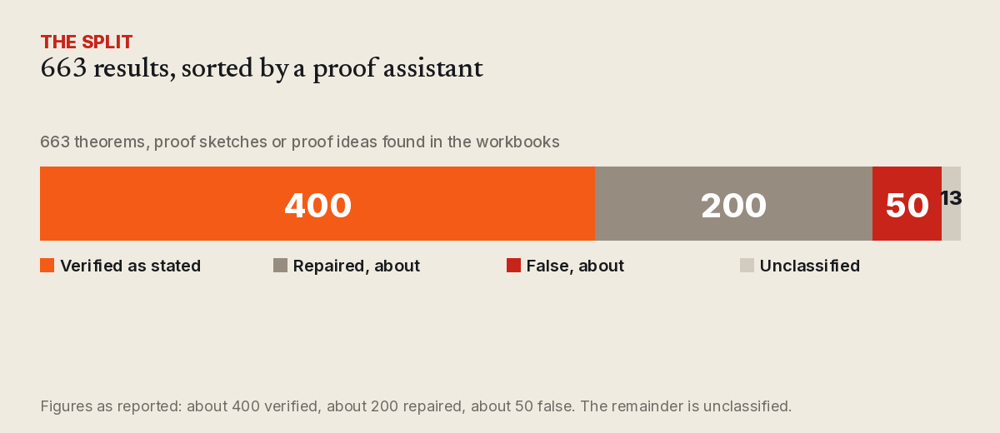

Four hundred proved, two hundred repaired, fifty wrong
A Finnish logician pointed Claude at Gödel's thousand pages of shorthand. The finding is not the theorems. It is the split.

On 13 November the Guardian reported something that will be quoted badly for months: an AI helped unlock hundreds of previously unknown results in the notebooks of Kurt Gödel. The detail worth keeping is smaller and more useful than the headline.
Since 2017 Jan von Plato, a logician at the University of Helsinki, has led a project to read 16 of Gödel's workbooks — 1,009 pages written in Princeton between 1940 and 1942, most of it in Gabelsberger shorthand, a German stenographic system already obsolete in Gödel's own lifetime. The project had been proceeding at roughly one page a week. In September von Plato handed his own English transcriptions to Claude. Within days he had a 650-page explanation of the series, checked page by page.
Then he asked the model to extract every theorem in the workbooks for which Gödel had a proof, a proof sketch, or an idea for one. It returned 663. He put them through Coq, the proof assistant. About 400 held as stated. About 200 needed repair — a definition sharpened, an assumption added. About 50 were false.

The split is the finding
Fifty false results sounds like a scandal and is closer to a receipt. Gödel annotated his own notebooks in the margins — falsch!, schlecht! — when he returned to them and found he had been wrong. A model reconstructing a half-finished idea from a shorthand sketch is going to produce things its author would have struck out, and did.
The part that matters is the middle band. Two hundred results did not survive as written but survived as something: the statement needed to be made precise, or an assumption made explicit. That is the ordinary texture of mathematical work, and it is exactly what a language model cannot tell you it is doing. It will hand you a confident list. Only a checker separates "this is true" from "this is nearly true, if you add the hypothesis the author left implicit".
Von Plato's own framing is careful: the workbooks contain dozens of anticipations of results not established until the 1970s and 1980s, and 14 themes in logic that nobody has pursued. That is a claim about what is in the notebooks, not a claim that Gödel proved things in 1941 that the field discovered later.
What the machine did not do
The shorthand was not cracked by a model. It was transcribed by people — the Helsinki project has employed a specialist on the source materials, with European Research Council funding from 2018 to 2023 — and Claude worked on English text that a human had already produced. The workflow was: humans read the marks, a model read the sense, a proof assistant read the logic.
Two other boundaries are worth stating. No paper and no data release have been reported, so outside logicians cannot rerun the extraction. And the 650-page digest has been checked by von Plato, not, as far as is known, by independent reviewers.
What historians still owe
Joel David Hamkins of Notre Dame, who has not seen the reconstruction, told the Guardian that if it stands up it is "remarkable and historically interesting" — and that separating how much came from Claude and how much from Gödel is a job for historians. He drew a firm line on credit too: resemblance to Paul Cohen's later proof shows Gödel was on the path, not that he arrived. "You don't get credit for work you don't tell anyone about."
The sharpest individual case is the axiom of choice. Gödel said in 1966 that he had been one definition short of proving its independence, decades before Cohen's work. The reconstruction passed Coq — after repair. A machine-checked proof of a repaired statement is evidence that the repair works. It is not yet evidence about what Gödel held in his head.
The workflow worth copying
Strip the story to its method and it is three steps, in this order: transcribe, generate, verify. The expensive part was the first, and it took nine years and a specialist. The fast part was the second. The part that made the output worth anything was the third, and it was not optional — it reclassified a quarter of the results and threw out fifty.
That order is the opposite of how these tools are usually used. Most people generate first and verify if there is time, which is why so much AI-assisted work is confident and unowned. The Helsinki project inverted it: the checker was designed in before the model was pointed at anything.
For anyone building learning tools, the implication is uncomfortable and specific. If a student can generate a plausible proof in seconds, the scarce skill is not generation. It is knowing what a proof assistant is for, and being willing to run one. Tools that teach checking are worth more than tools that teach producing.
What is claimed, and what is checked. The page count, the shorthand, the nine-year pace and the September handover are reported facts about the project. The 663, the 400, the 200 and the 50 are von Plato's figures as reported, not independently reviewed. The Coq results cover formalised statements, not authorship. Nobody has shown yet which ideas are Gödel's and which are the reconstruction's.
What to watch
Three things would settle the open questions: a publication with the extraction method and the formalised statements, so others can rerun it; independent review by logicians who work on the Nachlass; and the next tranche of notebooks, which include physics and cosmology — including Gödel's statistics for testing his rotating universe against observed galaxy directions.
The headline will be that AI found hundreds of unknown theorems. What happened is more interesting: a machine read a thousand pages quickly, a human checked them slowly, and a proof assistant decided which of the confident sentences were true.
Sources
- Alex Bellos, "AI helps unlock discoveries hidden in notebooks of man who transformed maths", The Guardian, 13 November 2026.
- University of Helsinki, The Gödel Enigma project.
- Jan von Plato, abstract for the 34th Vienna Circle Lecture, October 2026 (PDF).
- Explainer of what was machine-verified versus claimed: explainx.ai.